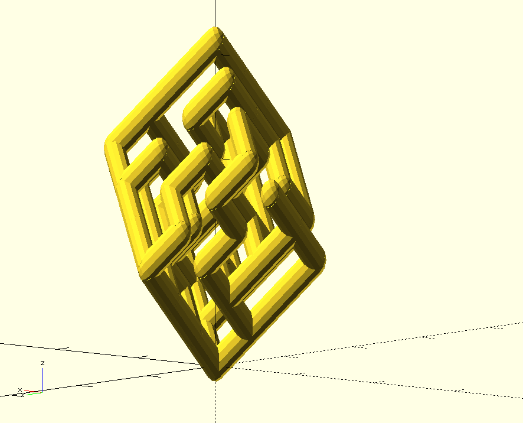
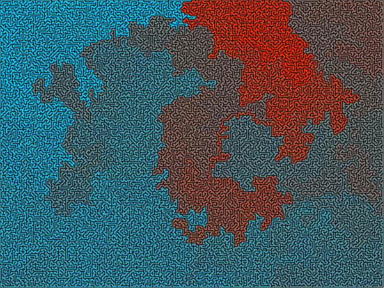

It's My Web Page
I'm Joe Bowers. I'm a computer programmer and I live in the San Francisco Bay Area.
I have a public LinkedIn profile.
I've been writing some code to generate and manipulate live video streams, and then I've been pushing that video to Twitch. You can check it out at twitch.tv/joeatworld.
I made some little video games that play themselves.
- World 1, a diorama about space Santa Claus
- World 2, they argue with Pokemon
- World 3, industry!
- World 4, cutscenes
The folks who make Mi.Mu Gloves used to have a DIY design posted on line, so I made one.
These little mazes were generated with tools I built after reading Jamis Buck's book, Mazes for Programmers. You can take a look at the tooling (and maybe make your own mazes) on Github.
I like to play music, and I play the accordion and the guitar. Here's some music I made in Garage Band when I lived in North Carolina.
- Two More Minutes of Something You Supposed was Forever
- (2 minutes 20 seconds)
- Waltz of the Undead
- (3 minutes 50 seconds)
- Good News for Late Filers
- (3 minutes 15 seconds)
- Recorded for Quality Purposes
- (4 minutes 13 seconds)
I have a twitter account. My tweets delete after a while, so I've saved some exemplary ones here.
I would probably let you follow me if you asked.
Before I was an engineer, I made some animated movies. Here's one from a really long time ago.